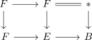

image of the fiber for the cohomological serre spectral sequence
Proposition
Let $F \xrightarrow{\iota} E \xrightarrow{\pi} B$ be a fiber sequence with $F$ connected and $M$ any \(R\)-module Then under the cohomological serre spectral sequence the image of the map
\begin{align*}
H^p(E,M) \rightarrow H^p(F,M)
\end{align*}
identifies with $E_{0,p}^{\infty}(\iota)$
Proof
follows from the map of fiber sequences

and naturality of the homological serre spectral sequence functor